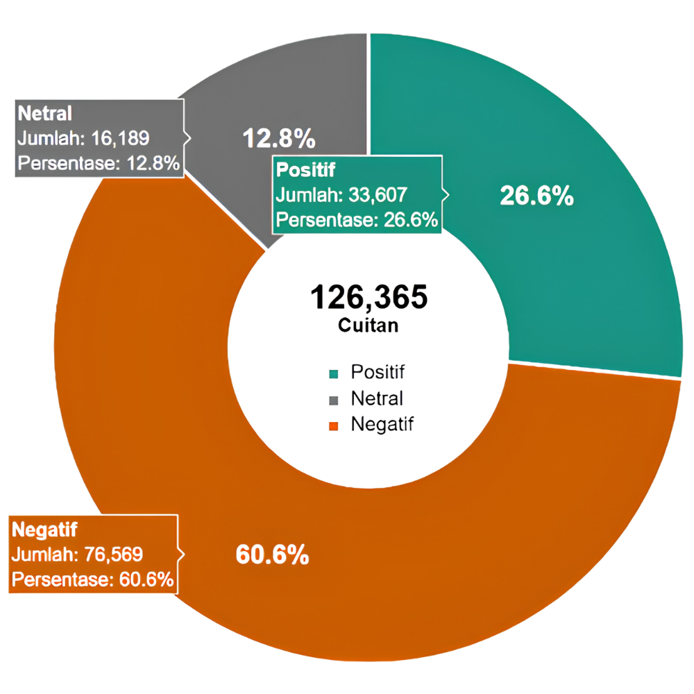
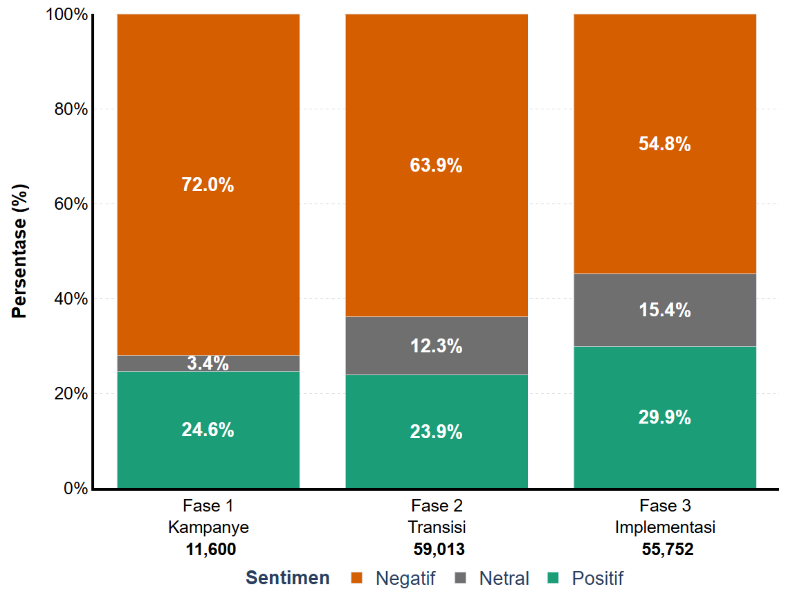
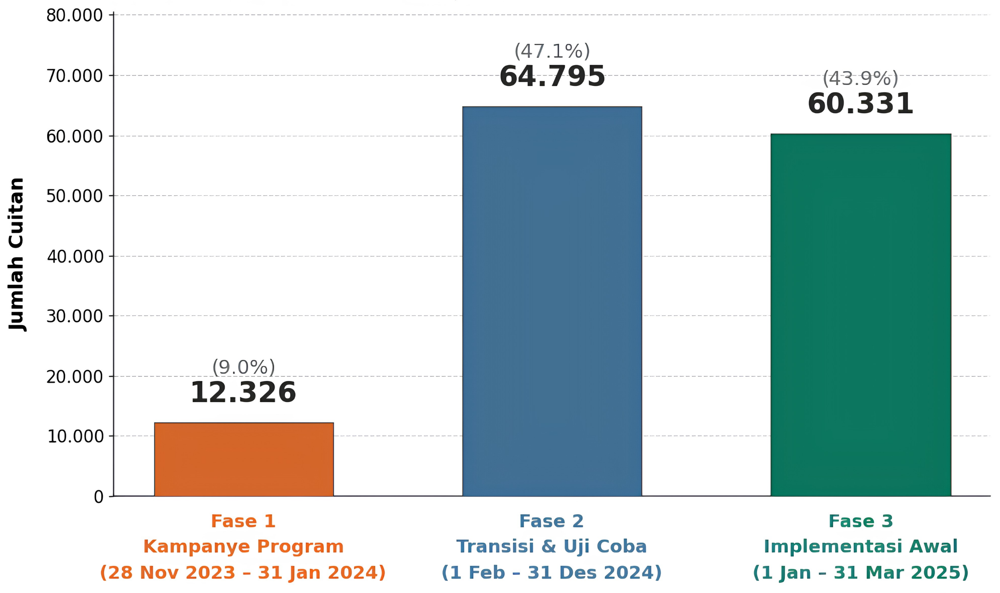
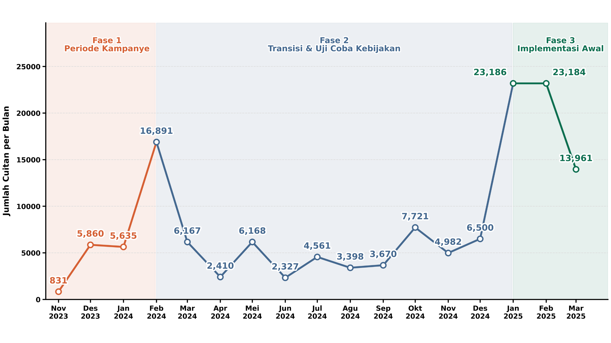
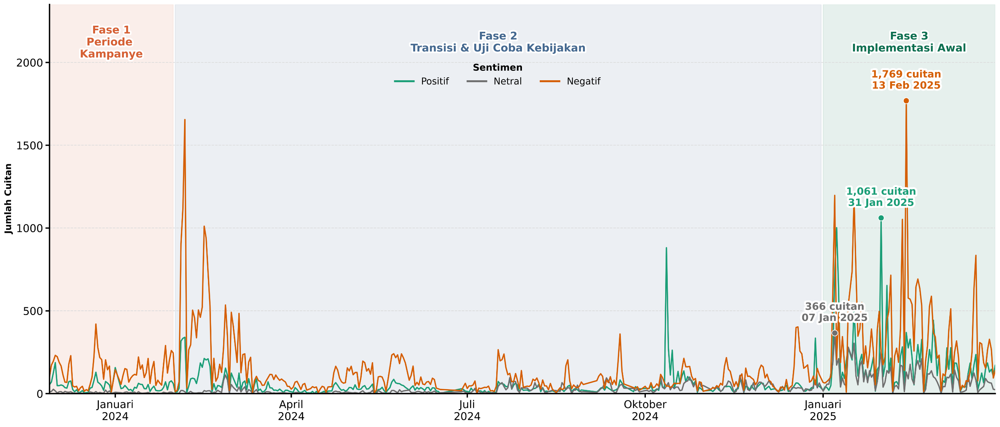
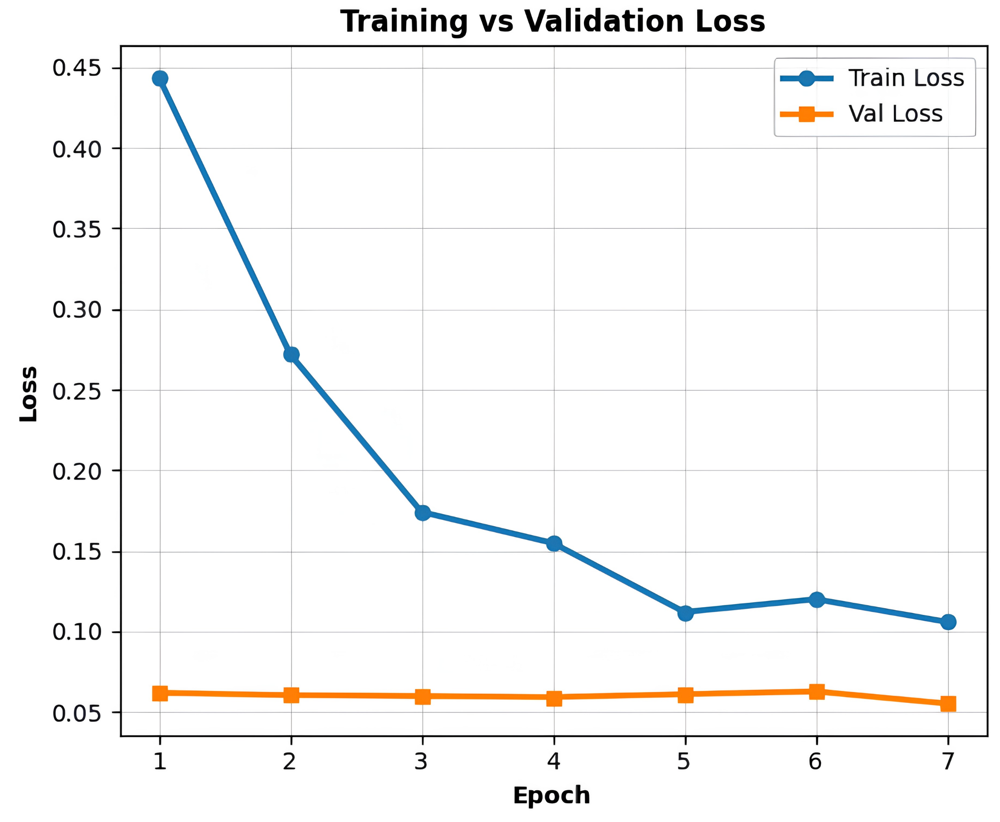
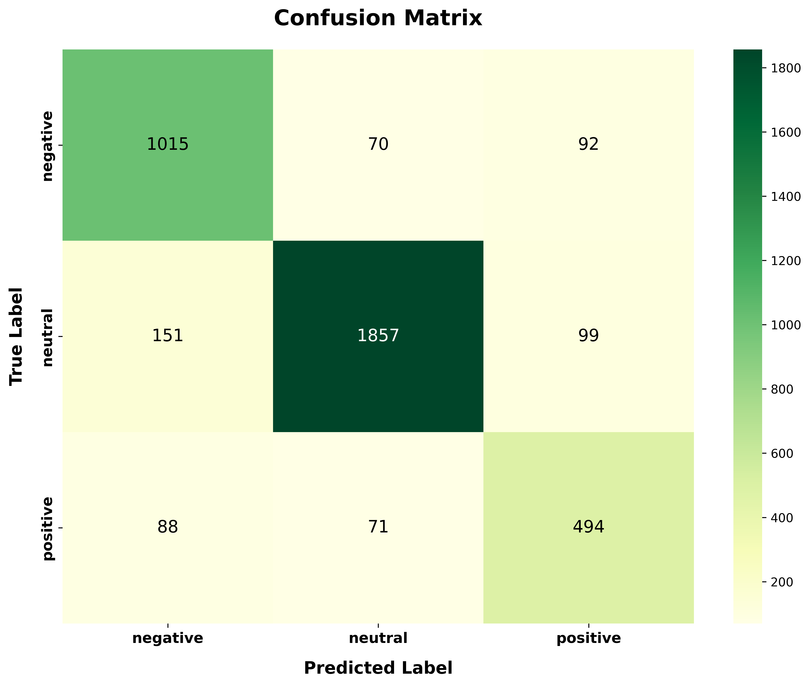

CASE STUDY / PUBLIC POLICY
PUBLIC
SENTIMENT
Mapping how public opinion around the Makan Bergizi Gratis programme changed across 126,365 posts on Platform X.
How did public sentiment around MBG change as the policy moved from campaign discourse to transition, trials, and early implementation?
NEGATIVE
DOMINATED.
Across 126,365 cleaned tweets, negative sentiment was the largest class at 60.6%, followed by positive at 26.6% and neutral at 12.8%.
This is a map of observed discourse on Platform X — not a direct measurement of policy approval.

THE NEGATIVE
SHARE FELL.
Negative sentiment declined from 72.0% during the campaign to 63.9% during transition and trials, then to 54.8% during early implementation. Positive sentiment reached 29.9% in the final phase.


DISCUSSION
EXPANDED.
Phase 1 contains 12,326 tweets (9.0%), Phase 2 contains 64,795 (47.1%), and Phase 3 contains 60,331 (43.9%).
The larger volume in the latter phases reflects a broader period of transition and early implementation, where discussion increasingly followed concrete policy developments.
OPINION MOVES
WITH EVENTS.
The monthly series shows several sharp increases in discussion volume, including February 2024 and January–February 2025. The daily series exposes the finer-grained spikes behind those monthly totals.


85.50%
ACCURACY.
The fine-tuned IndoBERTweet model reached 85.50% accuracy and a 0.8563 weighted F1-score on the test set.


FROM POLITICAL
DEBATE TO
IMPLEMENTATION.
The research identifies a consistent shift in the character of the conversation. Early discourse was strongly tied to political polarization and the initial policy proposal. As the programme moved toward trials and implementation, attention increasingly moved toward funding mechanisms, price per portion, operational quality, and delivery in the field.
The decline in negative share should therefore be read as a change in the composition of observed discourse, not as proof that public approval increased.
A changing discourse across three policy phases — not a simple approval score.